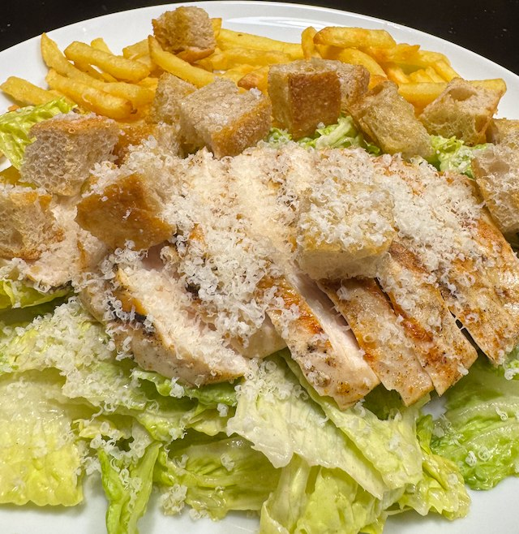

Ainsley's Chicken Salad

This recipe is from Ainsley Harriott's Friends & Family Cookbook.
Ingredients
- Croutons
- 4 slices crusty bread, cut in small cubes
- olive oil
- salt
- Chicken
- 2 chicken breasts
- salt and pepper
- 1 tsp smoked paprika
- Dressing
- 3 tbsp mayonnaise
- 1 tbsp creme fraiche
- 2 garlic cloves, crushed
- 1 tsp dijon mustard
- 1 tsp worchestershire sauce
- ½ tsp tabasco
- 2 anchovy fillets, crushed to paste
- 30g parmesan cheese, grated
- 1 cos lettuce, torn into pieces
Method
Make the croutons. Put the bread cubes on a tray, drizzle with olive oil, sprinkle with salt and mix. Cook in oven on 200°C fan for 10 minutes. I like the croutons crispy on the outside, but still a bit chewy on the inside. They might need another 5 min in the oven.
Cook the chicken. Heat a griddle pan to hot. Add the chicken, salt, pepper and paprika. After a couple of min, turn the heat down to medium and cook for 10 min. Flip, salt and pepper and cook for another 5-10 min.
Make the dressing. In a bowl whisk together the dressing ingredients.
Assemble. Mix the dressing with the lettuce then add the croutons and mix. Put in bowls. Cut the chicken breast on a slant, and put on top of salad. Grate over some more parmesan.